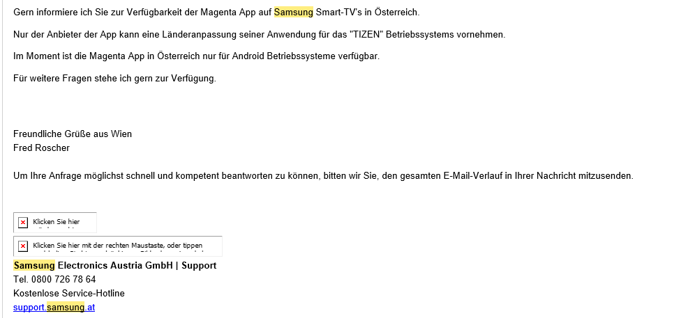

Ich besitze ein Samsung TV Gerät UE55KU6070 und möchte über eine App die TV-Programme ansehen.
Auf meinem TV gibt es die MagentaTV App nicht.

Warum nicht?
Wann wird diese verfügbar sein?

Hallo,
nachdem die MagentaTV App für Samsung SmartTVs für das Frühjahr 2020 angekündigt war, ist sie in Deutschland nun seit ein paar Tagen online gegangen. Im AppStore meines Fernsehers ist die MagentaTV App aber noch nicht auffindbar, ich nehme an, dass die App nur für Fernseher mit Standort Deutschland im Store zu finden ist. Wann kommen auch wir in Österreich in den Genuß der Samsung App, damit wir nicht mehr über den FireTV Stick fernsehen müssen? Gibt es hierzu irgendwelche Pläne?
Hallo @reset ,
aktuell liegen uns dazu keine Infos vor. Derzeit ist nur über den Amazon Fire TV Stick möglich, dass du die Magenta TV App nutzt.
LG, Jonathan
Am 1.10.2020 um 14:52 schrieb Jonathan Dorian:Hallo @reset ,
aktuell liegen uns dazu keine Infos vor. Derzeit ist nur über den Amazon Fire TV Stick möglich, dass du die Magenta TV App nutzt.
LG, Jonathan
Diese Antwort ist absolut nicht akzeptabel! Als Zahlender Kunde kann man zumindest erwarten, dass man eine Info erhält, ob es in Österreich geplant ist und wenn, bis wann es in etwa geplant ist.
Am 2.12.2020 um 12:04 schrieb Andre We:Diese Antwort ist absolut nicht akzeptabel! Als Zahlender Kunde kann man zumindest erwarten, dass man eine Info erhält, ob es in Österreich geplant ist und wenn, bis wann es in etwa geplant ist.
@Jonathan Dorian bitte um eine Info!
Hallo @Andre We,
diese Community dient eigentlich dem Zweck, dass User anderen Usern helfen. Ich habe dir meinen derzeitigen Stand der Dinge mitgeteilt. Da ich nicht in die Planung kommender Einführungen bin, kann ich dir auch keine weiteren Infos mitteilen. Schöne Grüße, Jonathan
Ok, wen kann man dann dazu befragen - wenn nicht diese Community? Wer macht die Planung?
vielen Dank @Jonathan Dorian
Hallo @Andre We wie die TV App aktuell genutzt werden kann bzw. die Voraussetzungen findest du in unseren FAQs ( Magenta TV App Voraussetzungen ). Ob bzw. wann die App direkt für deinen SmartTV genutzt werden kann, kann ich dir nicht sagen. Eine Kontaktmöglichkeit kann ich dir leider auch nicht nennen. Sobald sich etwas ändert, informieren wir auf unserer Webseite unsere Kunden. Bis dahin kann ich dich nur um Geduld bitten. Tut mir leid, dass ich keine anderen Infos habe. LG Karo
On 02/12/2020 at 12:04 PM, Andre We said:Diese Antwort ist absolut nicht akzeptabel! Als Zahlender Kunde kann man zumindest erwarten, dass man eine Info erhält, ob es in Österreich geplant ist und wenn, bis wann es in etwa geplant ist.
Grundsätzlich sind das firmeninterne Themen, warum sollte man das dem Kunden öffentlich kundgeben?
Apple verrät dir ja auch nicht vorher welche coolen Features oder Apps als nächstes geplant sind für die nächste 10 Jahre ...
Nur weil man zahlender Kunde ist heißt das nicht dass man alles Recht der Welt hat
Bearbeitet von MarioMAm 26.12.2020 um 07:36 schrieb MarioM:Grundsätzlich sind das firmeninterne Themen, warum sollte man das dem Kunden öffentlich kundgeben?
Das ist eine sehr eigenartige Sichtweise, öffentliche Roadmaps sind bei Softwareservices grundsätzlich nicht so ungewöhnlich (der Vergleich mit Produktzyklen hinkt). Magenta Deutschland hat die geplante Umsetzung von MagentaTV auf Samsung Geräten Ende 2019/Anfang 2020 bekanntgegeben und privaten Beta Test angekündigt, das Release dann wegen Corona verschoben und dann im Herbst mit Verspätung geliefert.
Ich warte halt auf dieses Feature weil der Umweg über FireTV echt sehr schwach ist, und stelle mir die Frage ob ich dann nicht auf ein Konkurrenzprodukt wechsle, wenn das nie kommt... Da Magenta Deutschland das vollständig ausgerollt hat hätte ich erwatet, dass es auch für die anderen Länder irgendwie Pläne gibt.
Am 26.12.2020 um 07:36 schrieb MarioM:Grundsätzlich sind das firmeninterne Themen, warum sollte man das dem Kunden öffentlich kundgeben?
Apple verrät dir ja auch nicht vorher welche coolen Features oder Apps als nächstes geplant sind für die nächste 10 Jahre ...
Nur weil man zahlender Kunde ist heißt das nicht dass man alles Recht der Welt hat
Wie Reset schreibt, ist das durchaus relevant auf das Setup zu Hause. Es geht auch nicht um eine Innovation sondern darum wann die App die es in anderen Ländern gibt auch in AT verfügbar ist. Wie @reset hat es deutschland ja geschafft einen Zieltermin zu nennen, auch wenn der nicht gehalten hat ist es besser als einfach keinen Kommentar abzugeben, als ginge es um Geheimnisse.
Am 28.12.2020 um 18:33 schrieb Andre We:Wie Reset schreibt, ist das durchaus relevant auf das Setup zu Hause. Es geht auch nicht um eine Innovation sondern darum wann die App die es in anderen Ländern gibt auch in AT verfügbar ist. Wie @reset hat es deutschland ja geschafft einen Zieltermin zu nennen, auch wenn der nicht gehalten hat ist es besser als einfach keinen Kommentar abzugeben, als ginge es um Geheimnisse.
Ich besitze einen Samsung UE55KU6070 und habe großes Interesse an der MagentaTV-App.
Wann kann man damit rechnen?
Ich besitze ein Samsung TV Gerät UE55KU6070 und möchte über eine App die TV-Programme ansehen.
Auf meinem TV gibt es die MagentaTV App nicht.

Warum nicht?
Wann wird diese verfügbar sein?

Hallo zusammen,
ich habe dazu unser Fachteam befragt. Mir wurde zugesichert, dass bereits daran gearbeitet wird, dass Magenta Streaming Apps auf Tizen (dem Betriebssystem von Samsung) verfügbar sind, ein genaues Release-Datum konnte mir aber noch nicht genannt werden. Daher bitten wir diesbezüglich noch um Geduld.
LG Andrea
Am 25.3.2021 um 14:26 schrieb Andrea_:Hallo zusammen,
ich habe dazu unser Fachteam befragt. Mir wurde zugesichert, dass bereits daran gearbeitet wird, dass Magenta Streaming Apps auf Tizen (dem Betriebssystem von Samsung) verfügbar sind, ein genaues Release-Datum konnte mir aber noch nicht genannt werden. Daher bitten wir diesbezüglich noch um Geduld.
LG Andrea
Hallo, wird es die App auch für LG Oled TVs geben?
Hallo @paradiselostat,
Ich empfehle dir, direkt beim Hersteller des Geräts nachzufragen, ob die App verfügbar oder installierbar sein wird. LG, Jonathan
Wollte nur anmerken, das ich eine Magenta TV App für Tizen auch eine super finden würde :-) .
Magenta in der Slovakei hat ja schon eine solche App.
LG Mahlzeit
vor 13 Minuten schrieb mahlzeit:Wollte nur anmerken, das ich eine Magenta TV App für Tizen auch eine super finden würde :-) .
Magenta in der Slovakei hat ja schon eine solche App.
LG Mahlzeit
Hoffentlich kommt die App auch bald bei uns.
H
Ich wollte mal nachfragen, ob es irgendwelche News/Perspektiven für eine Magenta Tizzen App gibt.
Danke Mahlzeit
vor 3 Stunden schrieb mahlzeit:Ich wollte mal nachfragen, ob es irgendwelche News/Perspektiven für eine Magenta Tizzen App gibt.
Danke Mahlzeit
Man hört nichts mehr darüber! Eingeschlafen?
Habe auch großes Interesse daran.
Ich frag mal wieder nach, vielleicht gibt es ja mittlerweile eine Perspektive?
Hi @mahlzeit , uns liegen noch keine neuen Infos dazu vor. LG Karo
Nachdem mittlerweile schon wieder einige Monate ins Land gezogen sind wollte ich Fragen ob es diesbezüglich Neuigkeiten gibt? Nachdem die App in D ja schon länger am Markt ist, kann es ja nicht so schwer sein, diese für AT zu adaptieren.
Kleiner Tipp am Rande. bevor man Kunden alle paar Wochen anruft um sie zu einem Handytarif zu überreden, wäre es sinnvoll, dafür Sorge zu tragen, dass diese mit den Produkten die sie bereits besitzen zufrieden sind
 . Samsung ist ja nicht gerade eine kleine Firma, daher ist anzunehmen, dass etliche Magenta Kunden auf eine Lösung dieses Problems warten.
. Samsung ist ja nicht gerade eine kleine Firma, daher ist anzunehmen, dass etliche Magenta Kunden auf eine Lösung dieses Problems warten.
Grüße
Alchemist
Hallo @Alchemist , wir können dir sagen, dass die Samsung-Applikation ist in Planung ist. Einen genauen Zeitraum können wir leider noch nicht nennen. Bitte noch um etwas Geduld. Danke, LG Karo
vor 2 Stunden schrieb Karo:Hallo @Alchemist , wir können dir sagen, dass die Samsung-Applikation ist in Planung ist. Einen genauen Zeitraum können wir leider noch nicht nennen. Bitte noch um etwas Geduld. Danke, LG Karo
Jetzt warten wir aber schon sehr lange und werden immer wieder vertröstet.
Schön langsam erwarte ich mir schon eine kompetente Antwort, wann es die App wirklich geben kann.
vor 2 Stunden schrieb Agotto:Jetzt warten wir aber schon sehr lange und werden immer wieder vertröstet.
Schön langsam erwarte ich mir schon eine kompetente Antwort, wann es die App wirklich geben kann.
Da kann ich Agotto 100% ig zustimmen
Am 14.4.2022 um 15:48 schrieb Alchemist:
Da kann ich Agotto 100% ig zustimmen
Also das ist schon ein starkes Stück. Jetzt ist die App seit 2 (!) Jahren in Deutschland verfügbar und hierzulande wird immer noch unverbindlich und ohne klare Timeline vertröstet? Wenn ich das in meinem Job mache, dann bin ich in kürzester Zeit arbeitslos …
Christoph
Hallo,
nachdem die MagentaTV App für Samsung SmartTVs für das Frühjahr 2020 angekündigt war, ist sie in Deutschland nun seit ein paar Tagen online gegangen. Im AppStore meines Fernsehers ist die MagentaTV App aber noch nicht auffindbar, ich nehme an, dass die App nur für Fernseher mit Standort Deutschland im Store zu finden ist. Wann kommen auch wir in Österreich in den Genuß der Samsung App, damit wir nicht mehr über den FireTV Stick fernsehen müssen? Gibt es hierzu irgendwelche Pläne?
Am 14.4.2022 um 10:20 schrieb Karo:Hallo @Alchemist , wir können dir sagen, dass die Samsung-Applikation ist in Planung ist. Einen genauen Zeitraum können wir leider noch nicht nennen. Bitte noch um etwas Geduld. Danke, LG Karo
Damit dieses Thema nicht einschläft, Wann ist die Magenta TV App für Samsung TV Geräte in Österreich verfügbar. Der "Technische Support" meine ich muss mir nur die App herunterladen ... tja leider ist die App auf meinem Samsung Gerät nicht zu finden und kann auch nicht geladen werden.
Ein ewiges Vertrösten.

Wenn die Smart-TV Geräte mit dem Android System laufen, ist die App wohl in dessen App Store zu finden.
Für Smart TV mit Tizen System, leider noch nicht.

Gibt es schon etwas neues zu diesem Thema?
vor 15 Stunden schrieb wulf:Gibt es schon etwas neues zu diesem Thema?
Für Android Passierte Smart TV soll es die Magenta TV App schon geben, nur eben für das Tizen System "noch" nicht.
Wenn man ein Android Smart TV hat und die Magenta TV App nutzen möchte, einfach mal in dessen App Store reinschauen, ob die App schon verfügbar ist.
Lieber Rasputin
Es geht hier nicht um Android
Hier geht es um Samsung Fernseher mit Tizen OS
In Deutschland funktioniert es schon lange
WARUM dann nicht auch in Österreich???
und wenn wir schon dabei sind
WANN gibt es endlich NETFLIX für die Magenta Box???
Bearbeitet von wulf@wulf ,
vor 2 Stunden schrieb Rasputin:Für Android Passierte Smart TV soll es die Magenta TV App schon geben, nur eben für das Tizen System "noch" nicht.
Habe ich auch so geschrieben!.
EDIT: Wenn du schon so sehr auf Netflix fixiert bist, und ein Samsung Smart TV mit Tizen hast, so ist Netflix schon drauf installiert (zumindest auf meinem Samsung TV mit Tizen).
Bearbeitet von RasputinLieber Rasputin
Dass es mit Android funktioniert wissen wir schon
Dass es mit Tizen noch nicht funktioniert wussten wir auch schon
Dass man Netflix auf allen Geräten ausser der Magenta Box installieren kann wussten wir auch schon
Daher sind deine Posts leider nicht hilfreich und tragen zu der Frage nichts konstruktives bei
Anscheinend willst du nur die Anzahl deiner Posts erhöhen um mehr Sterne oder Auszeichnungen zu bekommen
Wenn du hier eine weiter Antwort schreiben willst dann bitte nur wenn du konkret sagen kannst wann MagentaTV auf einem Samsung Fernseher installiert werden kann
Alles andere wäre Kontraproduktiv wie deine letzten 3 Posts hier
Vielen Dank und liebe Grüße
Wenn meine Antworten für dich als kontraproduktiv erscheinen, dann sollte man nicht diesen Blödsinnigen Satz-
Am 3.2.2023 um 18:21 schrieb wulf:Gibt es schon etwas neues zu diesem Thema?
von sich geben.
Habe mir nur erlaubt auf deine Anfrage zu Antworten.
vor 14 Stunden schrieb wulf:Wenn du hier eine weiter Antwort schreiben willst dann bitte nur wenn du konkret sagen kannst wann MagentaTV auf einem Samsung Fernseher installiert werden kann
Dazu müsste man Kaffeesatz Leser sein!.

Das hier ist eine USER helfen USER Community, und demzufolge geben auch USER darin antworten.
Wenn es dir nicht passt, dann wende dich mit deiner Frage an die Serviceline 0676 2000, und stelle diese nicht in einer Community.
Bearbeitet von Rasputin
Am 5.2.2023 um 08:13 schrieb Rasputin:Habe mir nur erlaubt auf deine Anfrage zu Antworten.
hast du leider nicht, da du ja keine Antwort für mich/uns hast ;-)
Am 5.2.2023 um 08:13 schrieb Rasputin:Dazu müsste man Kaffeesatz Leser sein!.

wenn du kein Kaffeesatz Leser bist warum antwortest du dann?
Am 5.2.2023 um 08:13 schrieb Rasputin:Das hier ist eine USER helfen USER Community, und demzufolge geben auch USER darin antworten.
die Betonung liegt auf HELFEN
deine posts helfen aber niemandem ausser dass sie deine Anzahl an Posts erhöhen

Am 3.2.2023 um 18:21 schrieb wulf:Gibt es schon etwas neues zu diesem Thema?
Du F............t, hier deine Frage.
Am 4.2.2023 um 10:25 schrieb Rasputin:Für Android Passierte Smart TV soll es die Magenta TV App schon geben, nur eben für das Tizen System "noch" nicht.
Und hier meine Antwort - Schwarz unterlegt - dazu.
An dieser ändert sich wohl vorläufig auch nichts, den die "App" ist nach- wie vor nicht im Store verfügbar.
vor 20 Stunden schrieb wulf:deine posts helfen aber niemandem ausser dass sie deine Anzahl an Posts erhöhen

das Trifft eher auf dich zu.
Und wenn du jeden Tag die Selbe Frage hier stellst, wird es deshalb nicht schneller mit einer "App" für das Samsung TV mit Tizen geben.
Bearbeitet von Rasputin
Hallo,
Gibt es nun endlich etwas neues zu dem Thema?
Die Mitarbeiter bei der Serviceline wissen nicht bescheid und geben falsche Informationen weiter.
MAGENTA TV ist nach wie vor im Store von Tizen OS TVs nicht verfügbar (nur doe Variante unserer slowakischen Nachbarn).
Bitte, schauts dass ihr das endlich hinbekommt, kann ja nicht mehr so die große Hürde sein.
Die Konkurrenz bietet es auf jeden Fall für alle OS an.
Lg
Am 16.11.2023 um 12:24 schrieb lucek87:Bitte, schauts dass ihr das endlich hinbekommt,
Hi,
es scheint, als ob die angesprochene App sich derzeit in der Testphase befindet und es noch keine klaren Informationen darüber gibt, wann diese Phase abgeschlossen sein wird und die App für die breite Öffentlichkeit verfügbar sein wird. Es ist ratsam, regelmäßig nach Updates oder Mitteilungen Ausschau zu halten, um auf dem neuesten Stand zu bleiben.
Liebe Grüße, JD.
Das ist echt erstaunlich - der Thread (erster post) ist vom September 2020
Nach über 3 Jahren, in denen die App in Deutschland bereits verfügbar ist, ist man in Österreich immer noch in der "Testphase"???
Wenn man innerhalb von 3 Jahren eine App nicht hinbekommt, oder nicht hinbekommen will, dann soll man das doch bitte klar kommunizieren. Die meisten Betroffenen User haben wahrscheinlich eh schon Alternativen gefunden, aber immer noch von einer Testphase zu sprechen ist schon, sagen wir, originell.
Möglicherweise könnte MagentaAT die Ankündigung des Endes der Testphase für seine Tizen kompilierte App in diesem Forum bekannt geben? Eine entsprechende Anzahl von "field testers" scheint ja vorhanden zu sein, um die aufwendigen Entwicklungen (die unsere deutschen,tschechischen und slowakischen Kollegen bereits vor Jahren überwunden haben) zur Produktreife zu bringen. Dann wäre noch die Bereitstellung im Samsung SmartHub durch Magenta zu klären - ob diese Mechanismen jemanden bei Magenta bekannt sind ??
Ein Smart TV ohne verwendbarer App hat dann offenbar den falschen Provider für Dienstleistungen, wenn das so weiter geht (3 Jahre+)
Warum schafft es Magents nicht ihre TV App auf Samung TVs zur Verfügung zu stellen ? Ich habe Samsung kontaktiert (siehe Antwort unten) und angeblich ist Magenta dafür verantwortlich das zu bewerkstelligen. Die App war auch ganz kurz im App Store von Samsung verfügbar im Sommer, dann war sie wieder weg.
Weiß da wer mehr ?


Unglaublich, der letzte Beitrag hier ist 2(!!!) Jahre alt, und Magenta hat es noch immer nicht geschafft die App auf Samsung Smart Tvs zur Verfügung zu stellen........dieses Unternehmen ist einfach nur mehr lächerlich.
Am 16.12.2023 um 09:10 schrieb smurf:App auf Samsung Smart Tvs zur Verfügung zu stellen........dieses Unternehmen ist einfach nur mehr lächerlich.
Hey, ich möchte freundlich darauf hinweisen, dass du auch die Möglichkeit hast eine Magenta TV Box zu nutzen oder du kaufst dir alternativ einfach einen Amazon Fire TV Stick. Was die Voraussetzungen sind, um die Magenta TV App zu nutzen, wird klar auf unserer Webseite ganz unten informiert -> https://www.magenta.at/tv/tv-app .
LG JD.
Am 18.12.2023 um 17:41 schrieb Jonathan Dorian:Hey, ich möchte freundlich darauf hinweisen, dass du auch die Möglichkeit hast eine Magenta TV Box zu nutzen oder du kaufst dir alternativ einfach einen Amazon Fire TV Stick. Was die Voraussetzungen sind, um die Magenta TV App zu nutzen, wird klar auf unserer Webseite ganz unten informiert -> https://www.magenta.at/tv/tv-app .
LG JD.
Ich HABE eine TV Box, möchte aber alternativ die App nutzen ! Im Juni war diese kurz verfügbar im Store vom Samsung Smart TV, jetzt nicht mehr. Warum gibts dort die tschechische Version davon ? Warum versprecht ihr das seit 2021(!!!) und schafft es bis heute nicht ?
Geht mal auf Fragen ein statt immer copy paste Antworten herunter zu leiern 1
Am 18.12.2023 um 18:42 schrieb smurf:Geht mal auf Fragen ein statt immer copy paste Antworten herunter zu leiern 1
Ich glaube, ich muss mehr Rehctschriebfheler einbauen, damit man sieht, dass ich keine Antworten Paste & Copy 😂 .
Am 18.12.2023 um 18:42 schrieb smurf:Warum gibts dort die tschechische Version davon ?
Soweit ich informiert bin, gabs da mal aus Testzwecken eine Version zum Download - was aber fehlerhaft
Am 18.12.2023 um 18:42 schrieb smurf:Warum versprecht ihr das seit 2021(!!!) und schafft es bis heute nicht ?
Auch hier kann ich nur informieren, dass an einer endgültigen Version gearbeitet wird. Womöglich müssen hier noch Lizenz-Vereinbarungen und so abgeklärt werden, bevor ein Release erfolgen kann. Da liegen mir aber keine genauen Infos vor.
LG JD.
Any News zur Magenta TV App für Tizen?
danke
Am 14.2.2024 um 11:36 schrieb Mex:Any News zur Magenta TV App für Tizen?
Hey @Mex ,
nach wie vor noch nichts Neues dazu.
Magenta Österreich ist offenbar wirklich nichts mehr zu peinlich! Nachdem diese Firma diese unsägliche Magenta TV Box auf den Markt gebracht hat, die von allen Usern und Medien in der Luft zerrissen wurde, schaffen sie es nicht mal eine App für Samsung TVs zu releasen, die die Konzern-Mutter schon längst im Einsatz hat. Ist der Ruf erst mal ruiniert, lebt es sich offenbar ganz ungeniert...erbärmlich!
Bearbeitet von Geri00Vielen Dank, @Geri00 , für dein Feedback! Es wäre toll, wenn du künftig etwas freundlicher formulierst 🙂 . Ich werde es gerne an unsere Techniker:innen weiterleiten. Vielleicht tut sich ja dann was.
An alle anderen Leser:innen möchte ich darauf hinweisen, dass es eine praktische Alternative gibt: einfach einen TV Stick erwerben, beispielsweise von Amazon. Mit diesem ist es ganz einfach, die Magenta TV App, Netflix und vieles mehr zu nutzen.
Am 23.2.2024 um 10:47 schrieb Jonathan Dorian:Vielen Dank, @Geri00 , für dein Feedback! Es wäre toll, wenn du künftig etwas freundlicher formulierst 🙂 . Ich werde es gerne an unsere Techniker:innen weiterleiten. Vielleicht tut sich ja dann was.
An alle anderen Leser:innen möchte ich darauf hinweisen, dass es eine praktische Alternative gibt: einfach einen TV Stick erwerben, beispielsweise von Amazon. Mit diesem ist es ganz einfach, die Magenta TV App, Netflix und vieles mehr zu nutzen.
Hallo JD,
Auf andere Anbieter auszuweichen um ein angebotenes Service nutzen zu können ist keine Lösung. (Zb wird heim Hdmi Arc unterstützt, was die Surround Anlage nutzlos macht)
Wieso ist es so schwer diese App auf Tizen OS freizuschalten und wieso gibt es da keine offiziell Stellungnahme?
Magenta kann echt glücklich sein, dass es kaum Alternativen gibt.
Lg
Hallo,
nachdem die MagentaTV App für Samsung SmartTVs für das Frühjahr 2020 angekündigt war, ist sie in Deutschland nun seit ein paar Tagen online gegangen. Im AppStore meines Fernsehers ist die MagentaTV App aber noch nicht auffindbar, ich nehme an, dass die App nur für Fernseher mit Standort Deutschland im Store zu finden ist. Wann kommen auch wir in Österreich in den Genuß der Samsung App, damit wir nicht mehr über den FireTV Stick fernsehen müssen? Gibt es hierzu irgendwelche Pläne?
Hallo,
Halbes Jahr vergangen.. any news???
Ich will dieses Thema wieder aufgreifen. BIS HEUTE schafft es Magenta NICHT die App auf Samsung Smart TVs anzubieten, das ist echt zum kotzen..
Lt. Samsung liegt das einzig und alleine an Magenta.
Hallo zusammen! 👋
Ich verstehe den Ärger, und ich möchte dir die aktuelle Lage erklären. Leider ist die MagentaTV App in Österreich derzeit noch nicht für Samsung Smart TVs mit Tizen OS verfügbar. Das liegt daran, dass die App in Österreich bislang nicht für diese Plattform freigegeben wurde.
Wir wissen, dass viele Kunden sich diese Funktion wünschen, und das Feedback dazu wird regelmäßig an die zuständigen Teams weitergeleitet. Wann genau die App in Österreich verfügbar sein wird, können wir dir aktuell leider nicht sagen. Es ist aber ein Thema, das intern immer wieder diskutiert wird.
Falls du trotzdem MagentaTV auf deinem Samsung TV nutzen möchtest, gibt es ein paar Alternativen:
TV Stick: Ein Streaming-Stick, der über HDMI angeschlossen wird und dir Zugriff auf alle Inhalte bietet.
Chromecast oder Apple TV: Beide Geräte ermöglichen es dir, MagentaTV auf deinen Fernseher zu streamen.
Laptop oder PC: Du kannst MagentaTV über den Browser nutzen und das Bild per HDMI-Kabel auf deinen Fernseher übertragen.
Ich hoffe, dass wir dir bald eine zufriedenstellende Lösung direkt für deinen Samsung TV anbieten können.
Bis dahin stehe ich dir gerne für weitere Fragen oder Unterstützung zur Verfügung! 😊
Liebe Grüße, JD. 🌻
Hallo @Jonathan Dorian
wie schaut's denn mit der Entwicklung aus? Können wir bald mit einer Lösung rechnen? Immerhin könnt ihr es in Deutschland ja auch und viele andere Anbieter in Österreich haben das auch schon geschafft.
Danke und Grüße
Stephan
Hallo @St3ph4n , es gibt dazu noch kein Update. Bitte hab noch Geduld. LG Karo
Hallo @Karo
fünf Monate nichts und dann gibt’s noch nicht mal ein Update? Wie viel Geduld ist noch erforderlich? Glaubst du, dass das heuer noch was werden kann? Oder sollen wir uns schon mal auf die zweite Hälfte des Jahrzehnts einstellen?
Danke
Stephan
Am 11.6.2025 um 22:07 schrieb St3ph4n:Hallo @Karo
fünf Monate nichts und dann gibt’s noch nicht mal ein Update? Wie viel Geduld ist noch erforderlich? Glaubst du, dass das heuer noch was werden kann? Oder sollen wir uns schon mal auf die zweite Hälfte des Jahrzehnts einstellen?
Danke
Stephan
Was heißt 5 Monate? Wir warten seit 3 Jahren darauf!